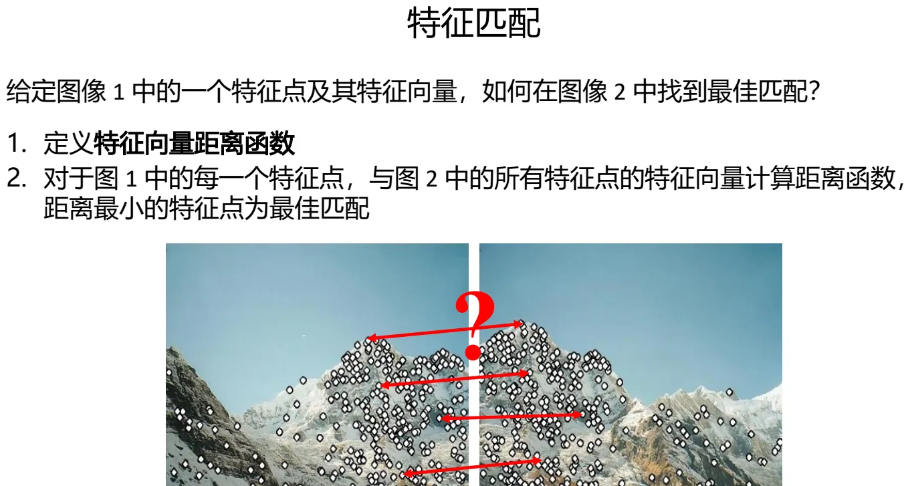
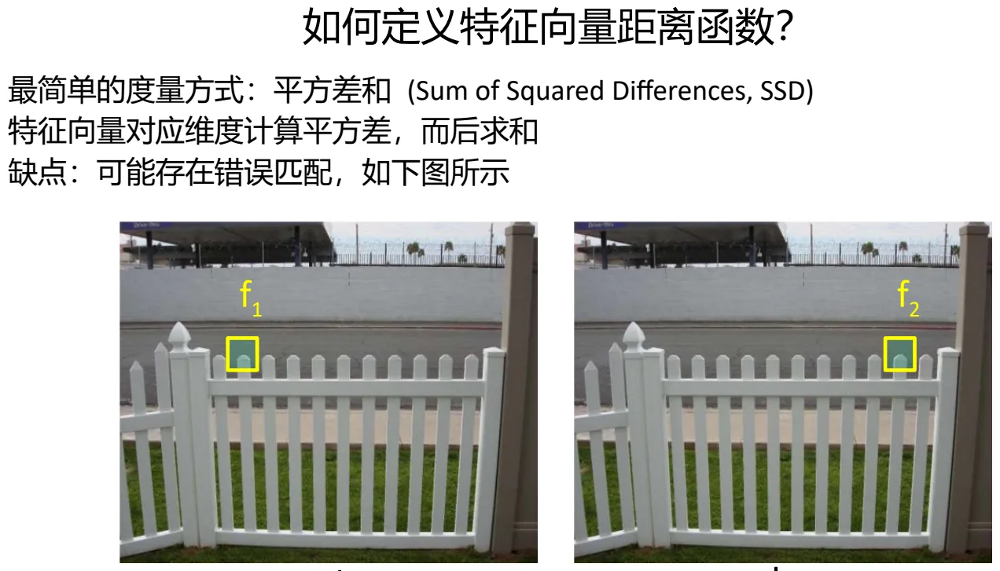
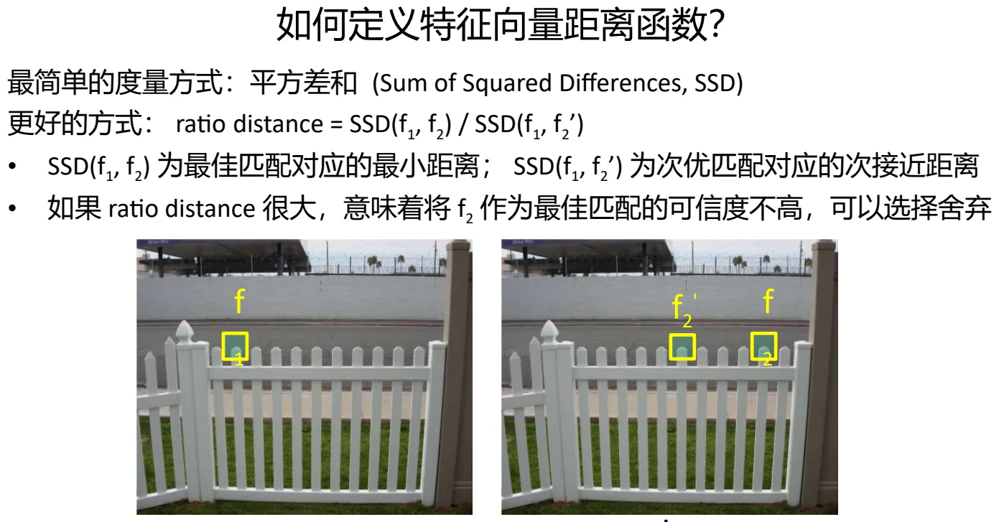
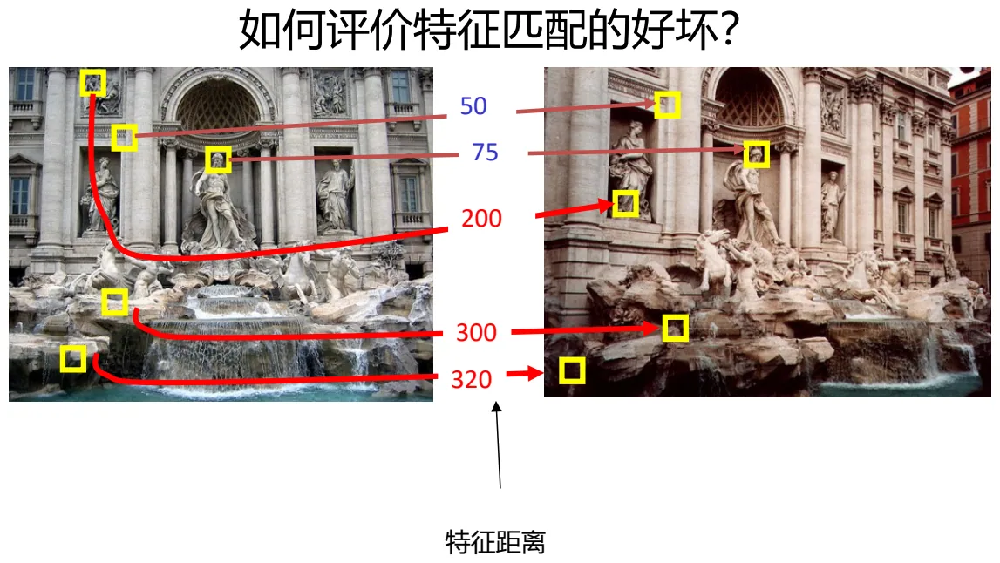
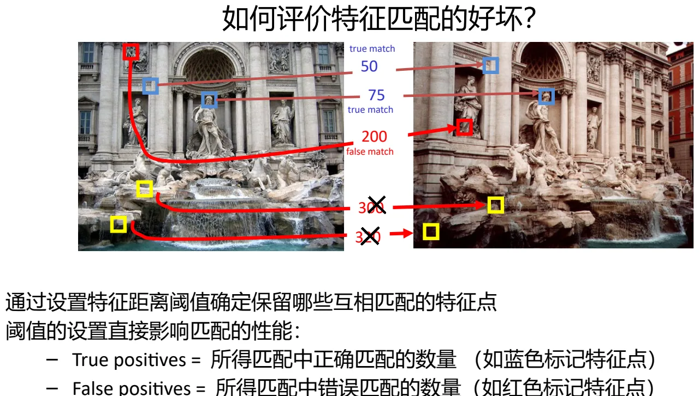
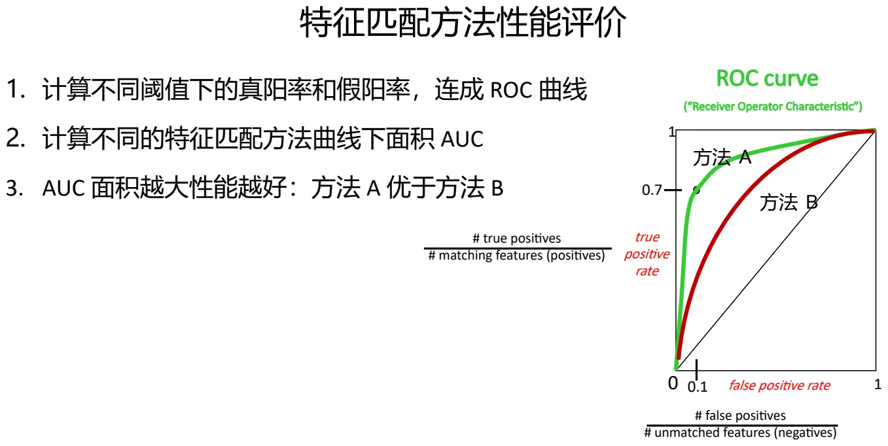

计算机视觉 · 第 4 章 特征检测与匹配
4.5 特征匹配与性能评价
有了关键点和描述子，最后一步是把两幅图里的点对起来。课件这一节开头同样先摆出那张 Main questions 过渡页，而四个问题里只剩最后一个还没回答：如何建立特征点之间的对应关系，也就是如何计算匹配。这一节先把「最佳匹配」定义清楚——距离最小的那个就是——然后讨论三件事：距离用什么量（SSD）、怎么压掉错误匹配（ratio distance）、怎么客观评价一套匹配方法的好坏（阈值、true/false positives、ROC 与 AUC）。这一节也是全章唯一给出「评价指标」的地方，考的就是能不能把指标的含义说准。最后课件抛出速度问题，直接引出 4.6 节的 FAST 与 ORB。
1. 什么叫「最佳匹配」
课件的提问方式很明确：给定图像 1 中的一个特征点及其特征向量，如何在图像 2 中找到最佳匹配？答案是两步：
- 定义特征向量距离函数；
- 对于图 1 中的每一个特征点，与图 2 中所有特征点的特征向量计算距离函数，距离最小的特征点为最佳匹配。

这就是最朴素的最近邻思路。它的代价是暴力搜索：图 1 有 m 个特征、图 2 有 n 个特征，就要算 m×n 次距离。当特征成千上万时，这一步往往比检测和描述加起来还慢——所以后面要讲速度优化。
2. 距离函数：从 SSD 到 ratio distance
（1）最简单的度量：平方差和 SSD
课件给出的第一种度量是平方差和（Sum of Squared Differences, SSD）：特征向量对应维度计算平方差，而后求和，即
SSD(f1, f2) = Σi ( f1[i] − f2[i] )²
它的缺点是：可能存在错误匹配。原因不难理解——SSD 只关心「两个向量有多像」，却不关心「有多像才够」。当图像 2 里存在某个与 f1 稍微相似、但并非同一个物理点的特征时，它照样会得到一个很小的距离，于是被当成最佳匹配。

（2）更好的方式：ratio distance
改进的办法是不只问「谁最近」，还要问「最近的那个比第二近的领先多少」。课件给出的量是：
ratio distance = SSD(f1, f2) / SSD(f1, f2′)
其中 SSD(f1, f2) 为最佳匹配对应的最小距离，SSD(f1, f2′) 为次优匹配对应的次接近距离。课件给出的判读规则是：
- 如果 ratio distance 很大，意味着「最近的那个」并没有比「第二近的那个」好多少——把 f2 作为最佳匹配的可信度不高，可以选择舍弃；
- 反之，如果 ratio distance 很小，说明最佳匹配有明显的领先优势，这个匹配就比较可靠。

这个判据之所以有效，是因为它用「相对差距」代替了「绝对距离」：真正独特的特征点，在另一幅图里只有一个位置与之相似；而那些长得像很多地方的特征（比如一片树叶上的点），最近邻和次近邻的距离差不多，ratio 就接近 1，于是被筛掉。这正是 4.1 节所说的「描述子必须可靠且独特」在匹配阶段的体现。
3. 怎么评价匹配的好坏
匹配算法最后都要设一个阈值：距离小于它的匹配就保留，大于它的就丢掉。课件把候选匹配按特征距离排在一条轴上（图上标出了 50、75、200、300、320 等距离值），一眼就能看出一个重要现象：正确匹配（true match）集中在距离小的一端，错误匹配（false match）则散布在距离大的一端。

由此得到两个基本指标（课件在图上用蓝色、红色分别标记了两类点）：
- True positives（真阳性）＝ 所得匹配中正确匹配的数量（如蓝色标记特征点）；
- False positives（假阳性）＝ 所得匹配中错误匹配的数量（如红色标记特征点）。
课件强调：阈值的设置直接影响匹配的性能——阈值放松，正确的匹配留得多，错误的也跟着进来；阈值收紧，错配少了，但正确的匹配也会被误杀。这是一个典型的权衡，没有「一律取某个数就最好」的答案。

ROC 曲线与 AUC
既然任何单一阈值都不够公平，就把所有阈值都试一遍，把结果连成曲线。课件的评价流程是：
- 计算不同阈值下的真阳率与假阳率，连成 ROC 曲线（Receiver Operator Characteristic）；
- 计算不同特征匹配方法曲线下的面积 AUC；
- AUC 面积越大性能越好——课件的例子里方法 A 优于方法 B。
两个坐标的定义是：
- true positive rate = # true positives / # matching features (positives)，即「本该匹配上的特征里，真正匹配上了的比例」；
- false positive rate = # false positives / # unmatched features (negatives)，即「本不该匹配的特征里，被错误匹配上的比例」。

用 ROC 的好处是它把「阈值」这个人为选择的参数消掉了：比较两种匹配方法时，不必纠结「各自取什么阈值才公平」，直接比整条曲线或曲线下的面积即可。这也是机器学习里评价二分类器的标准做法——课件在这里提前把它的思路用上了。
4. 下一个问题：速度
质量评价讲完，课件以一张纯文字的过渡页抛出最后一个问题：如何提高检测速度，保证实时性？前面这套流程（DoG 金字塔 + 128 维描述子 + 暴力最近邻）精度好，但计算量大：实时视觉、移动机器人、AR 这类场景根本等不及。下一节给出的答案是牺牲一部分不变性，换取数量级的速度——FAST 与 ORB。
本节小结
- 特征匹配两步：定义特征向量的距离函数；对图 1 的每个特征点，与图 2 所有特征点算距离，距离最小者为最佳匹配（暴力最近邻，代价是 m×n 次距离计算）。
- SSD（平方差和）：特征向量对应维度算平方差再求和；缺点是可能存在错误匹配。
- ratio distance = SSD(f1, f2) / SSD(f1, f2′)：分母是次优匹配的次接近距离；ratio 很大说明最佳匹配可信度不高，可以舍弃。
- 阈值直接决定性能：True positives 是正确的匹配数（蓝色标记），False positives 是错误的匹配数（红色标记）。
- 性能评价用 ROC 曲线与 AUC：横轴 false positive rate = #false positives / #unmatched features，纵轴 true positive rate = #true positives / #matching features；AUC 越大性能越好（方法 A 优于方法 B）。
- 遗留问题：这套流程精度高但慢，如何提高检测速度、保证实时性——下一节由 FAST 与 ORB 回答。